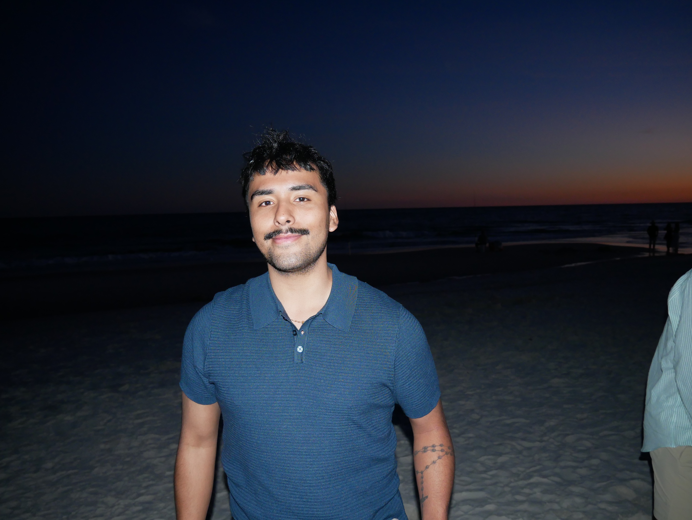

Group Members & Roles
-
Mia Cossentino – Team Lead and Research
-
 Emily Novak – Systems Engineer and Research
Emily Novak – Systems Engineer and Research -
 Jillian Doering – Interface Design Specialist and Research
Jillian Doering – Interface Design Specialist and Research -
 Madison Wheeles – Anomaly Detection Specialist and Research
Madison Wheeles – Anomaly Detection Specialist and Research -

Marco Cruz – Website Development and Research